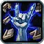
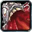
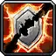
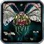

Warlock – Affliction leveling
Leveling Split 40 / 7 / 4 (Affliction / Demonology / Destruction)
No-respec Affliction leveling: instant Corruption and hit first, then Unholy Power for the pet, drain-tanking from 30 and Shadow Mastery late.
Talents in this build
Hover or tap a talent to see what it does at that rank.
Affliction · 40
- Improved Life Tap 2/2

Suppression 5/5
Improved Corruption 5/5- Improved Drains 3/3

Improved Bane of Agony 2/2- Fel Concentration 3/3

Amplify Curse 1/1- Pandemic 3/3
- Malevolence 5/5
 Nightfall 2/2
Nightfall 2/2- Siphon Life 1/1
- Soul Siphon 3/3
- Shadow Mastery 5/5
Demonology · 7
- Unholy Power 5/5
- Demonic Energies 2/2
Destruction · 4
- Improved Shadow Bolt 4/5
Leveling order
level 10 → 60
One talent point per level from 10 to 60. Follow it top to bottom.
| Level | Talent | Tree |
|---|---|---|
| 10 | Improved Corruption 1/5 | Affliction |
| 11 | Improved Corruption 2/5 | Affliction |
| 12 | Improved Corruption 3/5 | Affliction |
| 13 | Improved Corruption 4/5 | Affliction |
| 14 | Improved Corruption 5/5 | Affliction |
| 15 | Suppression 1/5 | Affliction |
| 16 | Suppression 2/5 | Affliction |
| 17 | Suppression 3/5 | Affliction |
| 18 | Suppression 4/5 | Affliction |
| 19 | Suppression 5/5 | Affliction |
| 20 | Unholy Power 1/5 | Demonology |
| 21 | Unholy Power 2/5 | Demonology |
| 22 | Unholy Power 3/5 | Demonology |
| 23 | Unholy Power 4/5 | Demonology |
| 24 | Unholy Power 5/5 | Demonology |
| 25 | Demonic Energies 1/2 | Demonology |
| 26 | Demonic Energies 2/2 | Demonology |
| 27 | Improved Drains 1/3 | Affliction |
| 28 | Improved Drains 2/3 | Affliction |
| 29 | Improved Drains 3/3 | Affliction |
| 30 | Amplify Curse 1/1 | Affliction |
| 31 | Improved Bane of Agony 1/2 | Affliction |
| 32 | Improved Bane of Agony 2/2 | Affliction |
| 33 | Improved Life Tap 1/2 | Affliction |
| 34 | Improved Life Tap 2/2 | Affliction |
| 35 | Pandemic 1/3 | Affliction |
| 36 | Pandemic 2/3 | Affliction |
| 37 | Pandemic 3/3 | Affliction |
| 38 | Soul Siphon 1/3 | Affliction |
| 39 | Soul Siphon 2/3 | Affliction |
| 40 | Soul Siphon 3/3 | Affliction |
| 41 | Malevolence 1/5 | Affliction |
| 42 | Malevolence 2/5 | Affliction |
| 43 | Malevolence 3/5 | Affliction |
| 44 | Malevolence 4/5 | Affliction |
| 45 | Malevolence 5/5 | Affliction |
| 46 | Shadow Mastery 1/5 | Affliction |
| 47 | Shadow Mastery 2/5 | Affliction |
| 48 | Shadow Mastery 3/5 | Affliction |
| 49 | Shadow Mastery 4/5 | Affliction |
| 50 | Shadow Mastery 5/5 | Affliction |
| 51 | Siphon Life 1/1 | Affliction |
| 52 | Fel Concentration 1/3 | Affliction |
| 53 | Fel Concentration 2/3 | Affliction |
| 54 | Fel Concentration 3/3 | Affliction |
| 55 | Affliction | |
| 56 | Affliction | |
| 57 | Improved Shadow Bolt 1/5 | Destruction |
| 58 | Improved Shadow Bolt 2/5 | Destruction |
| 59 | Improved Shadow Bolt 3/5 | Destruction |
| 60 | Improved Shadow Bolt 4/5 | Destruction |